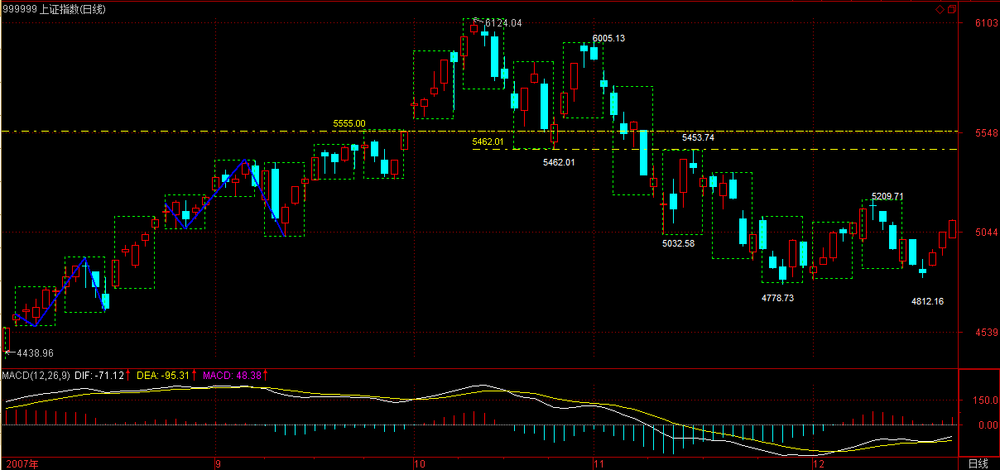

(2007-12-17 21:40:15)
【韶山映山红】脏腑学说，金代医学家张洁古创立。通过观察人体外在征象，研究人体内在脏腑的生理功能、病理变化及其相互关系的学说。包括构成人体的基本结构——五脏、六腑、奇恒之腑、经络等全身组织器官的生理、病理及其相互关系；构成生命活动的物质基础——精、气、血、津液的生理、病理及其相互关系和与脏腑的关系。】
【韶山映山红】脏与腑的关系，实际上就是阴阳表里关系。脏腑分阴阳，脏属阴，腑属阳，脏为里，腑为表，一阴一阳，一脏一腑，通过经脉互为络属，构成表里关系，决定了其生理功能上的密切联系。它们是心与小肠、肺与大肠、脾与胃、肝与胆、肾与膀胱、以及心包与三焦相为表里，构成脏腑相合的功能单位。】
（文章颜色只是为了上下区别，没有任何含义。）
【韶山映山红】这篇博客文章的全文使用的颜色是洋红（R255G0B255）。】
判断走势，如同中医看病，未病而治的是第一等的，次之的是对治欲病，到已病阶段，那只能算是亡羊补牢了。【韶山映山红】唐朝名医孙思邈在《黄帝内经》“圣人不治已病治未病，不治已乱治未乱。”的基础之上提出：“上工治未病之病、中工治欲病之病、下工治已病之病。”】
但绝大多数的人，病入膏肓了还在幻想，市场里最终牺牲的，总是这种人。【韶山映山红】对一个走势类型的形态分析来说，“未病”、“欲病”、“已病”、“病入膏肓”，分别是指什么情况？★可以做个专题，以后研究。】
【韶山映山红】上涨的时候看转折。“未病”是上涨中枢还在震荡中，或者中枢移动中，最后的节点就是上涨走势类型的终点，也就是第一类卖点。“欲病”是上涨中枢移动停止，形成新的中枢的中阴阶段，这时候可能出现的是本级别的第二类卖点。“已病”是中阴阶段的多义性中枢的第三类卖点已经形成，转折已成定局。“病入膏肓”是向下走势的中枢已经形成，已经形成三卖，至少是向下盘整，很可能形成下跌趋势。】
级别的存在，可以比拟成一种疾病的级别，1分钟的可能是一个小感冒，而有时候一个5分钟的下跌就足以是一个小的感冒流行了。至于30分钟、日线的下跌，基本就对应着一些次中级或中级的调整，大概就相当于肺结核之类的玩意。而周线、月线之类的下跌，那是什么就不用说了。如果是季线、年线级别的下跌，就算不是死人一个，也至少是植物人了。【韶山映山红】“未病”、“欲病”、“已病”、“病入膏肓”是某一个级别的形态，对健康的危害程度是级别。】
未病-欲病-已病，对应的界限就是相应级别的第一、二、三类买卖点，注意，对于上涨来说，踏空也是一种病，涨跌之病是相对的。【韶山映山红】第一类买卖点是转折点，第二类买卖点是中阴阶段，第三类买卖点才是转折的定性。也就是说，下跌趋势背驰的反弹，形成新的走势类型的中枢，没出三买，再下跌出三卖，还是原趋势方向的继续，本级别下跌趋势扩张成高级别向下盘整，或者演变成本级别下跌趋势＋本级别向上盘整，都不算真正的转折。】
如何诊断出这病所处的阶段，这和中医的道理是一样的。例如，肺和大肠相表里，注意，中医里的肺不单单指西医那叫肺的玩意，而是相应的一个功能系统，例如，鼻子就属于肺这个系统的，因此，鼻子的毛病，可能就和大肠相关系着，而在西医里，这两样东西无论如何都是不搭界的。【韶山映山红】"肺和大肠相表里"，最早出自《黄帝内经·灵枢·本输》: "肺合大肠，大肠者，传道之腑。" "肺和大肠相表里"是中医理论中对脏腑关系的论述，肺是脏属阴（手太阴），大肠是腑属阳（手阳明），肺为里，大肠为表，经脉相互络属，构成了肺与大肠之间的密切联系。】
【韶山映山红】中医原来也是对应器官的，只是后来的现代医学逐步进入中国，这种对应关系被证明是荒谬，所以中医开始扭曲，说不是具体的器官，只是“功能系统”，而具体对应的功能就可以虚幻，不可能证伪，就可以继续蒙骗了。★】
而在走势中，当下的走势，就对应着这样类似的两重表里关系。【韶山映山红】何为“两重”？★以后研究。】
在我们前面所讨论的走势分解的配件中，有两种类型：一、能构成中枢的。二、不能构成中枢的。
第一种，包括线段、以及各种级别的走势类型；第二种，只有笔。【韶山映山红】这里没有把分型当做是“走势分解的配件”。为什么？★以后研究。】
笔是不能构成中枢的，这就是笔和线段以及线段以上的各种级别走势类型的最大区别。【韶山映山红】递归函数是从线段中枢开始的，但是线段到最低级别中枢的划分，实际上也属于递归函数，只有笔的形成、笔－线段的进阶是初始化函数。】
因此，笔在不同时间周期的K线图上的相应判断，就构成了一个表里相关的判断。【韶山映山红】表是笔在大的“时间周期的K线图上的相应判断”，里是笔在小的“时间周期的K线图上的相应判断”，表里的区别只是“不同时间周期的K线图”，并不像"肺和大肠相表里"那样是不同的东西。为什么？★以后研究。】
越平凡的事情往往包含最大的真理，一个最简单的笔，里面包含了什么必然的结论？一个最显然又有用的结论就是：
缠中说禅笔定理：任何的当下，在任何时间周期的K线图中，走势必然落在一确定的具有明确方向的笔当中（向上笔或向下笔），而在笔当中的位置，必然只有两种情况：一、在分型构造中。二、分型构造确认后延伸为笔的过程中。【韶山映山红】类似同级别分解那样，只做笔级别的分解。“在分型构造中”的时候，属于前面已经确定的笔。“分型构造确认”是确认什么？“延伸为笔的过程中”已经成笔还是没成笔？没成笔就有可能随时结束这个延伸，那又怎么算？★以后研究。】
【韶山映山红】这个“分型构造确认”只有两种情况：１，分型成立。２，笔成立。除非是一字板Ｋ线的包含问题捣乱，否则，分型右元素走出第一个Ｋ线，就可以算是分型成立。但分型成立却不一定延伸成笔，原来的笔还可以延伸。同样的道理，分型右元素之后再延伸三个Ｋ线就可以宣告笔成立，已经成笔也还可能撤销。如果以分型成立为划分标准，顶底K线本身什么问题也说明不了，所谓分型构造，就只有右元素一个K线。这样的划分又有什么意义呢？如果以笔成立为划分标准，短的笔也可能笔成立的下一个K线就是分型右元素，也只有一个K线。不过还有更多K线不是这样，所以还是有意义的。】
根据这个定理，对于任何的当下走势，在任何一个时间周期里，我们都可以用两个变量构成的数组精确地定义当下的走势。
第一个变量，只有两个取值，不妨用1代表向上的笔，-1代表向下的笔；
【韶山映山红】第一个变量代表笔的方向，也就是说，先要有已经确定的笔。所以取值都是按照前面已经成立的笔。】
第二个变量也只有两个取值，0代表分型构造中，1代表分型确认延伸为笔的过程中。
【韶山映山红】什么是“分型构造中”？什么时候算是“出现”分型的“构造”？ 决定是否是分型的应该是右侧元素，出现右侧元素的时候算是“出现”分型的“构造”，然后的状态就是“分型构造中”。】
【韶山映山红】第二个变量，这一段说“1代表分型确认延伸为笔的过程中”，“延伸为笔”，也就是说，还没有成笔。如果这一笔最终没有完成，原方向的笔又继续延伸了，怎么算？下一段说1代表“笔在延伸之中”，也就是说，成笔以后才算。前后两段的说法不一致了。 经过研究，采信“笔在延伸之中”的描述，把分型之后的两个非包含元素都划归“分型构造中”，这样可以实现完全分类，应该是正确的解读。 第二个变量的0和1，笔成立的那个K线，也就是分型右元素之后的第三个K线，0切换为1。出现分型右元素的那个K线1切换为0。】
【韶山映山红】成笔之前，是笔级别的中阴阶段，把中阴阶段划分给下一笔肯定有问题啊，筑顶筑底阶段，就是赤裸裸的分型构造啊。做分型操作的，都死在中阴阶段。跟走势类型分析一样。这样，缠论就统一了。】
例如（1，1）这就代表着一个向上的笔在延伸之中，【韶山映山红】向上的笔已经成立。背驰的顶元素还没有出现，顶分型的右元素还没有完成。】（-1，1）代表向下的笔在延伸中，【韶山映山红】向下的笔已经成立。背驰的底元素还没有出现，底分型的右元素还没有完成。】（1，0）代表向上的笔出现了顶分型结构的构造，【韶山映山红】向上的笔已经成立。背驰的顶元素出现，顶分型的右元素还没有完成。】（-1，0）代表向下的笔出现底分型的构造。【韶山映山红】向下的笔已经成立。背驰的底元素出现，底分型的右元素还没有完成。】
任何的当下，都只有这四种状态，这四种状态描述了所有的当下走势。【韶山映山红】“这四种状态描述了所有的当下走势”，也就是说，是完全分类，非此即彼。】
更关键的是，这四种状态是不能随便连接的，例如（1，1）之后绝对不会连接（-1、1）或者（-1，0），唯一只能连接（1，0）；【韶山映山红】向上笔只能连接顶分型。】同样，（-1，1）只能连接（-1，0）；【韶山映山红】向下笔只能连接底分型。】而（1，0）有两种可能的连接：（1，1）、（-1，1）；【韶山映山红】顶分型可能连接向上笔延续、向下笔转折。】（-1，0）有两种可能的连接：（-1，1）、（1，1）。【韶山映山红】底分型可能连接向下笔延续、向上笔转折。】
有了上面的分析，我们就很容易进行更复杂点的分解。考察两个相邻的时间周期K线，例如1分钟和5分钟的。【韶山映山红】这里不做递归，直接用时间周期Ｋ线图。】
如果5分钟里是（1，1）或者（-1，1）的状态，那么1分钟里前面的任何波动，都没有太大的价值，因为无论这种波动如何大，都没到足以改变5分钟（1，1）或者（-1，1）状态的程度，这里就对1分钟的波动有了一个十分明确的过滤作用。如果你是一个最少关心5分钟图的操作者，你根本无须关心这些无聊的波动。【韶山映山红】5分钟的笔在延伸状态，还没有出现背驰。1分钟里“前面的任何波动”是什么情况？“无论这种波动如何大”都不改变1分钟的笔或者分型？★以后研究。】
此外，如果5分钟是（1，1），1分钟也是（1，1），那么，5分钟是断无可能在其后几分钟内改变（1，1）模式的，要5分钟改变（1，1）成为（1，0），至少要在1分钟上出现（1，0）或（-1，1），而在绝大多数的情况下，都是必然要出现（-1，1）的。【韶山映山红】不是递归，只是“两个相邻的时间周期K线”，所以这种改变并没有缠师说的那么难。因为1分钟图上的包含关系，在5分钟图上未必还是包含关系。5分钟改变（1，1）成为（1，0），也就是说，5分钟顶分型出现右侧元素，完全可能因为1分钟K线的数量而成立。】
因此，站在病的三阶段判断的角度，对于5分钟的笔状态，1分钟的笔状态的可能导致5分钟笔状态的改变，就是一种未病的状态。例如，对于5分钟的（1，1），1分钟出现（1、0）是一个小的警告，但这个警告如果只出现在1个5分钟的K线里，那么不足以破坏5分钟的结构，所以这个警告不会造成实质的影响，【韶山映山红】这里说“出现”，是1分钟出现（1，0）顶分型。】但如果这个1分钟的（1，0）被确认了，那么一个重要的警告就成立了，这就是将向欲病发展了。【韶山映山红】这里说“确认”，是分型后的转折笔开始1分钟的（-1，1）。】
但这个1分钟的（-1，1）出现并导致5分钟的（1，0）在形成中，就是一个欲病向已病发展了。当5分钟的（1，0）也确认向（-1，1）发展时，就确认已病了。
这种分析，同样可以应用在日线与周线的关系上，【韶山映山红】相邻的两个Ｋ线图周期的级别。】
例如最近大盘的走势，在周线上出现（-1，0），【韶山映山红】周线图的底分型右元素已经出现，底分型成立。】
而日线上目前是（-1，1），【韶山映山红】前一日的日K线新低之后，当日的日K线被包含，不成底分型，向下笔也没有成立，缠师说“目前是（-1，1）”状态，与前面解读的以笔成立为界不符。★以后研究。】
这种状况是下跌里第三恶劣的情况，【韶山映山红】第三恶劣是周线底、日线跌。周线（-1，0）日线（-1，1）。】因为最恶劣的是周线是（-1，1），日线也是（-1，1）；【韶山映山红】最恶劣是周线跌、日线跌。周线（-1，1）日线（-1，1）。】次恶劣的是周线是（-1，1），日线也是（-1，0）。【韶山映山红】次恶劣是周线跌、日线底。周线（-1，1）日线（-1，0）。】
对于第二、三恶劣的情况，技术高的也是可以去操作的，至于对于最恶劣的那种，就算技术高的，也算了。
目前，首要等待的就是日线出现（-1，0）的信号，而如果这信号出现时，周线还能保持（-1，0），那么就会出现第四恶劣的情况，也就是有可能出现转机的情况，【韶山映山红】周线是（-1，0），日线也是（-1，0）。第四恶劣是周线底、日线底。】是否出现，大盘走出来就知道了。
而目前的大盘处在最微妙的时候，为什么？因为一旦日线的（-1，1）延续到打破周线的（-1，0），这样就会变成最恶劣的走势状态，也就是周线（-1，1），日线也（-1，1）。
换言之，目前的大盘只面临两种选择，第1恶劣还是第4恶劣，如此而已。
【韶山映山红】周线向下笔的糟糕程度：
１，最恶劣是周线跌、日线跌。周线（-1，1）日线（-1，1）。离开，等日线底（-1，0）。
２，次恶劣是周线跌、日线底。周线（-1，1）日线（-1，0）。
３，第三恶劣是周线底、日线跌。周线（-1，0）日线（-1，1）。
４，第四恶劣是周线底、日线底。周线（-1，0）日线（-1，0）。】
为了记录，我们可以随时给大盘开一个即时的病情记录，这个记录是一个矩阵，按1、5、30、日、周、月、季、年的级别分类，这矩阵有8行，每一行就是对应级别的状态数组，这矩阵可能的情况就有4的8次方个，【韶山映山红】4种分类，8个级别。】一个相当大的数字，代表了走势所有可能的状态，也就是所有病的状态。
当然，用巨大的计算机，我们可以实时监控所有股票的病情。注意，每一种状态后并不是随机到任何另一种状态的，可变的状态是极为有限的，从中，可以分析出可能变化状态中出现最大可能赢利的转折状态，这种转折是必然的。然后用大型的机器监控所有股票，在相应的状态买入，相应的状态卖出，一部自动赚钱的永动机器就构造成了。
关于那些状态的转折效率是最高的，这是一个纯粹的数学问题，知识是有力量的，这就是一个例子。
当然，对于一般人来说，完全没必要去制造这样的机器，研究这样的问题。因为我们完全可以只关心三个连续的级别，例如，1、5、30分钟，然后这就对应着64种状态，这里，就和易经联系上了，很多人用易经研究股票，都是糊涂一通，其实，真要用易经研究，就从这下手，这才是正道，这个以后慢慢说。
可能不少人对日分型、周分型，这笔那笔地搞得晕，这其实是最简单的情况了，现在很少有好的中医，因为学医的看到这生那克的，那里这表的都晕了，所以中医的前途堪忧。不是中医有什么大问题，而是现在笨人、一根筋的人太多了。
当然，光是笔这重表里关系，不足以精确地诊断市场走势，这就象光搞清楚肺和大肠的关系，是治不好人的。可能在这重关系中的未病，站在别的关系下就看出已病来了。因此，必须再研究另外的表里关系。
更重要的是，不同的表里关系，之间还是有生克关系的，就如同中医里不同系统间的生克关系一样，只有在这个层面上，才能算初步沾了一点诊断的边。【韶山映山红】本文只简单讲了表里相生关系，没有讲相克关系。】
后面这些问题，后面再说，今天累了，睡觉。
【韶山映山红】生不是给予，克也不是剥夺的意思。生克不具有吉凶性质，当生而生则吉，不当生而生则凶；当克而克则吉，不当克而克则凶。克：规范与管理。】
(2007-12-18 15:31:11)
现在对于多头来说，形势十分明确，就是两个选择：早死早投胎还是背水一战。
技术上，本ID已经分析得很清楚，周线上是（-1，0），日线上两种选择，在4778点上制造（-1，0），这样多头还有背水一战的机会，否则就早死早投胎。【韶山映山红】周线上是（-1，0），日线上是（-1，1）。如果新低之前走出日线底分型，就是周线（-1，0）日线（-1，0）就背水一战。如果日线转折前又新低了，走成周线（-1，1）日线（-1，1）就早死早投胎。】
中线上，本ID已经反复强调，反抽以后必然还要探底，而在11月底谈论12月月K线形态时，就明确说过，至少有上影对11月长影实体进行反抽，这点已经做到了。
后面的问题其实很简单，就是这月K线是包含关系，还是继续月上的向下笔延伸，也就是4778点是否要在12月被破。一旦被破，也就是月线上要走出向下笔，在月出现新的底分型之前，一切中级的向上都免谈，这在技术上是不需要分析的，是必然的。【韶山映山红】这时候月线顶分型已经成立，而且是长阴下来，不开始下降笔的唯一的希望就是这月K线被包含。】
如果用更精细一点的分析，就是5209点下来的这个1分钟下跌走势究竟在什么位置结束，如果在4778点上结束，那么最坏的情况还不至于马上发生，也就是说，大盘的反抽最坏也能走成类似三角形之类的收敛形式，否则，这1分钟下跌，将是一轮大级别下跌的第一段，后面至少要等这个级别的下跌结束，才有中线站稳的可能。【韶山映山红】月线分型是否完成，这里对应的小级别走势分析是１分钟走势。】
目前，5209点下来的1分钟下跌已经构成两个中枢，其中的走势极端标准，例如今早的反抽就是第二中枢的第三类卖点，然后继续下跌，都很规范。
下面的问题，就是要关注后面是否能制造出背弛，其实更重要的是，背驰以后的反抽是否就在这第二中枢区间受阻，一旦如此，后面的走势一定大大不利于多头。
说实在的，现在的情况对多头确实是华山一条路，除非走出直接突破5200点颈线的走势，否则早死晚死都是死，还不如早死早投胎。
其实，跌破4778点并不是世界末日，反而必然会构造出走势上的背驰，也就是说，跌破也是空头陷阱，并没有什么大不了的。而在这里死顶，反而会让这陷阱杀人更多，所以，如果多头没有直接突破5200点的能力，还不如早死早投胎，例如这一生没活明白，6100点当多头，投胎回来活明白点，也不是什么坏事。
这里说的是大盘，个股并不一定太关联于大盘。即使大盘破位，那些明年肯定会被大搞的股票，一定会利用陷阱把不坚定分子清洗干净。
至于中石油之类的，那天吃饭，有人问本ID，本ID说既然开48，那就到24也很好。48，死都要发的都死了；24，想死反而得活。结果给酒桌上的人声讨，说本ID太残忍，让48的人怎么活。但市场从来都不为任何人的生死而不市场，当然，24的中石油只是一句酒话，说老实话，站在长线利益上，本ID还愿意见到14元的中石油，但估计没人会给。而实际上，中石油在30分钟上也跌出了一个线段的类下跌走势，后面就要开始关心底背驰制造的问题了。
超短线上，明后两天，是给多头最后的机会，如果还发不出力来，就早死早投胎吧。本ID给出的操作原则已经反复说了，没技术的，最好还是继续光荣伟大正确的小板凳，有技术的，就继续折腾那些强势的股票，当然，如果某些股票有大的底背驰，也是可以关心的，不过即使多头能发力，但如果再次反抽不能重上5032点，那么就必须小心被刀子刮伤。【韶山映山红】5032点是30分钟中枢的ZD。】
先下，再见。
(2007-12-18 21:02:26)
子曰：君子之於天下也，无适也，无莫也，义之於比。
杨伯峻：孔子说：“君子对于天下的事情，没规定要怎样干，也没规定不要怎样干，只要怎样干合理恰当，便怎样干。”
钱穆：先生说：“君子对于天下事，没有一定专主的，也没有一定反对的，只求合于义便从。”
李泽厚：孔子说：“君子对待天下各种事情，既不存心敌视，也不倾心羡慕，只以正当合理作为衡量标准。”
详解：
首先，以上三个解释都有逻辑问题。杨解，“怎样干合理恰当便怎么干”就是一个规定，怎么能说没规定呢？而符合钱解的君子，显然按其翻译，对“合于义”专主，对“不合于义”的就反对，怎么能说“没有一定专主的，也没有一定反对的”？李解是同样的问题，既然有“正当合理作为衡量标准”，那么就有“存心敌视”与“倾心羡慕”了，这个心，就是以“正当合理作为衡量标准”。
“适”，本义是“往、到”，引申为“归向”；
“莫”，通假“慕”，“向往”的意思。
“义”，名词动化用法，“取义”的意思，但这不是“舍生取义”里的“取义”，那里的“义”变成了一种上帝式的无聊道德规范，这里的“义”是“仪”的古字，“容貌”的意思；
“比”，就是“小人比而不周”里的“比”。
“归向”落实为一种行动，“向往”只是思想里那一点东西，因此“莫”比“适”程度上要轻点。君子对于天下的事物，不会立一个绝对的标准、上帝的模式之类的玩意在行为上去“适”，甚至连思想里的的“莫”都不会有。但历史上，无数的人，就是要在天下的事物里，忽悠点玩意出来，让人去“适”、去“莫”，然后这些徒子徒孙就当炮灰、传教士不断折腾。这一切，都不是君子所为。君子不但自己不去“适”去“莫”那些偶像、上帝、道之类的忽悠玩意，更不会去制造这些玩意，这天下，没一法可得，没一法可失，没有什么值得去“适”去“莫”的。
但光无“适”无“莫”，依然不是君子所为。君子无“适”无“莫”天下任何一物，但也不轻视天下任何一物。那种号称天下无“适”无“莫”，然后就扮成所谓的高人高士者，不过是“适”去“莫”这些所谓高人高士的无聊玩意。君子眼里，无净无污，天堂地狱一任往来，君子可以混迹于小人堆里“取义”之于“比”，呈现一种“比”的容貌，行小人行却无小人之“适”与“莫”。
一般人都把菩萨“适”“莫”于一些自己想象的神圣事物，但难道乞丐、妓女、面首、杀人犯里就没有菩萨所行？菩萨行，无所不行，地狱天堂人神鬼兽崇高低劣，无处不在。菩萨行而无所住，无所住而无所不行。甚至，行“适”“莫”之相，也是菩萨之行，而君子之行的道理是同样的。
菩萨自可见菩萨，君子自可见君子。有小人也装着说自己的小人之相只是“义之于比”，自己是无“适”无“莫”的，那当然可以蒙骗一般人。一般人被蒙骗，那是活该被蒙骗。这种事情，在历史上太多了。特别那些喜欢用大口号、大宣传、大理论去忽悠的，把全世界蒙骗得七倒八歪的，那还不是很正常的事情？这难道不是“人不知”的世界最经常发生的事情？别以为希特勒如何坏，日本军国主义如何残忍，好象别人被蒙骗是很悲惨，值得同情的。但没有这些所谓被蒙骗的，没有这些屈服于强权的人，哪里会有希特勒、日本军国主义？
最毒的花，如果没有其土壤，是长不出来的。而“人不知”的世界，就是所有毒花最好的土壤。最毒的，就是人的心地。所有的恶行，都是共业的结果，别把自己当成无辜的婴孩。老子号称婴孩是最纯洁的，要回去，那是脑子进水。婴孩的残忍并不比成年人小，只是没有能力显现而已。
但人的心地，又是最善的，所有的善行，同样是共业的结果。善恶，都是尔心所生。成君子的是你，成小人的也是你，没有人能替代你。
有人可能要问，明明知道“无适”、“无莫”，但为什么还是去“适”去“莫”了？这就是自己的心力被业力所牵引，自己的力量没有达到。业力之风只能吹走那些能被业力之风吹走的，而真正的自由，就是自由于这业力之网，“无适”、“无莫”地自由于各种境界。
生死是大业力，光喊“无适”、“无莫”，如何如何讨厌去“死”去轮回，但“死”和“轮回”依然不爽。真正的君子，不仅要之於天下而无适、无莫，更要之於生死而无适、无莫。因此，下面的句子同样是君子所必须的：“君子之於生死也，无适也，无莫也，义之於死。”
缠中说禅白话直译
子曰：君子之於天下也，无适也，无莫也，义之於比。
孔子说：君子对于天下的一切，没有行为的归向，也没有思想的向往，甚至可以让自己的容貌呈现出小人的“比“相。
(2007-12-19 15:15:39)
昨天说了，多头面临两个选择，如果连背水一战、绝地反击的勇气都没有，干脆早死早投胎。今天，在资金大回笼，利好不少的情况下，多头最终有了点动作，但这远远不够。这就像煮青蛙，多折腾两次，并不意味这青蛙就要成神仙了。
青蛙要成神仙，多头要真正逃出绝地，最基本的位置昨天也说了，就是5032点，这样，基本还是继续保持5000点附近的大级别震荡。当然，光震荡还是没用的，5209点的颈线还是必须攻克，否则最终青蛙还是要变成清炖青蛙。
技术上，今天把日的底分型给折腾出来了，早上第一波冲高就基本确认，因此后面的第一次回调，就构成超短线的一个第二类买点。这次的反抽，就是昨天所说的5209点下来的1分钟下跌背驰后的结果，因此在这里，至少要制造一个5分钟的中枢，该中枢的第三买卖点出现情况决定短线大盘的生死。
注意，形成底分型并不是万事大吉，关键是要后面连续站住5日线，否则只是一个中继，这配合相应细部的5分钟震荡情况，将一目了然，完全可以全面把握。中枢震荡的操作法则，课程里反复说到，必须多练习才能真正把握。
本ID在这里，只是一个陪练，最终希望各位自己学会去分析。如果你只希望来这里获得一些现成的结论，那就最好别来了，因为这里没有。
希望来这里的人，都是不需要拐杖，自己能走的人。本ID只是陪练，教练都算不上，这个道理必须清楚。
先下，再见。
(2007-12-19 20:43:23)
9点要去喝茶，很无聊的事情，赶快说上两句。明天还要出一次差，不过是晚上的事，明晚的帖子是不能写了。不过，在4点多会给出一个关于明年大盘的基本分析。
这个差真是不想去，但本ID就是心太软，特别一个50来的父字辈老男人说尽好话要你过去帮忙，真没办法拒绝，无聊呀。本ID这边还有一大堆事情等着处理，为一件无聊的事情浪费N天时间，真是脑子进水了。
本ID现在经常处于这种无聊的状态，就是一大堆无聊的人求你办这办那，就像等一下的茶，本ID都不知道为什么要去。其实，下午已经有一次无聊的会面了，一个老熟人，拿着一大堆项目，让本ID投这投那，本ID转弯抹角地告诉他，如果本ID真投了他那些无聊项目，本ID已经都没脸在市场混了。有时候，就不想撕破那脸皮。
本ID就奇怪了，自己从小开始就不爱求人，真记不住什么时候求过人办事。不知道什么时候欠下这么多无聊的债，还都还不清。一定是N个前生求人求得太多，今生来还债来了。
人，生下来，就是为了还债来的，如果能尽量少欠新的债，大概就是最幸福的。
闲话不想说了，胡诌一首七律打发各位，抱歉了。
流落
缠中说禅
流落红尘终是苦
断无真乐可拈提
贪痴易见三涂道
信义难寻五色泥
意画心描诤黑白
神谋鬼诈唬东西
百年老醉南柯梦
别样生涯一样迷
(2007-12-20 15:15:02)
因为晚上要出差，所以等一下就把晚上关于明年大盘走势的展望写了，4点左右贴出来。明天收盘尽量解盘，如果没时间，就在周六或周日补上。
今天大盘攻克5032点，初步任务完成，大盘围绕5000点上下震荡的大格局依然保持。下一步，就是要站稳5032点，为攻击5209点颈线的进一步任务打好基础。因此，5032点能否站住，就是判断大盘超短线强弱的关键点位。
今天盘中走势，5032点位置的重要性表现无遗，整个下午基本就是围绕该位置蓄势、突破、回抽的过程。很多人到现在还不大会看盘，例如今天的走势，其实一点可担心的地方都没有，因为整天连一个线段都没有完成，你有什么可担心的？
4812点上来，在4920点附近有一个1分钟的中枢，因此，下面就等待第二个1分钟中枢的出现，看这1分钟的上涨是否确立，最后再看其顶背驰的出现。这和5209点下来的1分钟下跌是一样的，只是反过来而已。
中石油今天终于把底分型给构造出来，后面就是确认的问题。
在30分钟上，这个线段的类背驰显然是制造这次回升的关键，这也说明了，中石油在30元附近至少可以构造一个大点级别的中枢，以后是再次破位还是继续上涨，就看这中枢的第三买卖点问题了。【韶山映山红】601857中国石油。】
大盘比中石油强点，向笔的延伸已经展开，所以和上次5209点一样，等到顶分型出现再说。当然，会看1分钟上涨的背驰，可以直接看那背驰操作，那更精确。

今天大盘股票的启动，与所谓期货的传闻有关，因为某部门递交了所谓要求期货开的玩意，但这玩意是需要批的，现在谁有时间批？谁负责批？这事情至少在程序上不是一个人的签名就可以批的，只要有签名权的人有一个人有保留意见，估计这东西就需要折腾。
其实，本ID是欢迎这种折腾的。现在的中国资本市场，连小学都没毕业、现货都没有搞好，就想搞期货上大学？谁的脑袋大、脖子粗，就顶吧。如果真出来，本ID是乐于看笑话的。
请先把创业板搞好，先完善多层次的资本市场间架。而最无耻的就是那些利益集团，为了自己的利益，企图在年底抢闸。
中国资本市场目前最大的问题是多层次资本市场的间架、印花税等交易成本的合理化，而不是好高务远（这个成语写成这样可是公开发行的软件制造的，连成语都写错却能发行，请问是谁负责的？我们的期货千万可别是这种水平）的所谓指数期货。
先下，4点再上帖2008年走势展望。
(2007-12-20 15:59:05)
年末，不可免俗地要对明年的行情展望一番。今年，无论是5月份的180个月时间周期、6100点的顶部以及调整的第一落脚点120天线，都被预先剧本了。不过，现在完全精确剧本明年走势，几乎是不可能的，因为明年市场上的可变分力太多，下面只从纯技术的角度进行一些界定性的分析。
从今年年K线上看，由于还有几个交易日，所以不能完全确认年K线的收盘位置，但年K线将留下较长上影，这点大概不会有太大改变。同样，年K线的实体部分也将相当长。

因此，明年的走势，今年的K线上影尖端6124点以及K线实体的一半位置（目前大约在3800点附近）将分别构成明年关键大箱体的上下边沿。目前大盘的位置，大致在这箱体的一半位置。将这箱体进行4等分，那么次级的支持与阻力大概分别在4355点与5555点。
可以断言，即使突破6124点后，明年能突破6124点+该箱体宽度，也就是大概8400点的可能也会极小，就算最终发生了，也肯定是一个将导致巨大灾难的多头大陷阱。同理，将原箱体宽度按4等分划分，那么，可以计算出突破6124点后依次的阻力位置。由于最后的年收盘没有出来，所以精确的计算可以留待今年收盘时，但方法是一样的。
从日线的均线系统上看，250天线将是明年最关键的位置。前面的文章已经说过，本次调整的第一只脚将落在120天线，那么第二只脚就极有可能是在250天线。
明年，至少有两次考验250天线的机会，极有可能是，第一次是喜剧，第二次是悲剧。
明年年K线最终是长阳的概率不大，十字星或类十字星的小阴小阳出现的概率极大。无论哪种情况，明年最需要关注年K线上影所制造的多头陷阱，当然，相应也要关注年K线下影所制造的空头陷阱。如果配合上股指期货，明年的陷阱多多，多头空头都不会好过，一旦落到井里，其后果一定比这次6124点这个小井要严重得多。
月K线太多就不分析了，这里只分析一下明年的季K线。由于本季度的K线基本定型，那么明年1季度的K线将最为重要。如果该K线低点比本季度K线低点低，而又不能马上创出6124点新高，那么季度线上的顶分型就构成。
然后，后面三个季度，5季度的平均线将成为最重要的线，一旦有效跌破，后果相当严重，其后的调整压力比这次6124点下来的要大得多。因此，5季度均线是明年多头的生命线，就如同这两年5月均线对多头的意义一样。
明年，最理想的走势是先抑后扬再抑，当然，细分起来，也可以是先小扬再抑接着大扬后大抑的走势，很难再出现这两年的单边走势。明年上半年最重要的事情，就是6124点下来的调整究竟最终走成什么形式，按照综合的判断，大平台型与大三角型的可能性最大，但无论哪种情况，其中第一子段走出锯齿型的可能性依然存在。
明年，至少有两个顶部是必须注意的，第一个就是6124点大调整的第二段上升所构造的顶部，这是一个小顶，第二个就是如果突破6124点以后制造的那个大顶。
底部注意三个，就是6124点下来的第一子段和第三子段的底部以及大顶以后第一段杀跌结束后所构成的底部。
当然，如果先是大三角形调整，将还有一个小顶与小底需要注意。【韶山映山红】还要“一个小顶与小底”才是“大三角形调整”。】
另外，在多头运气最好的情况下，6124点的第一子段的底部也有可能在今年年底就完成，但这并不影响总体图形的走势分析。【韶山映山红】“多头运气最好的情况下”，能够完成三角形的初步突破。】
个股方面，明年是题材股大热，各类的题材会层出不穷，指数可能没多大油水（期货另算），但如果能踏准题材轮动的节奏，明年的收益一点都不会比今年少，但相应的操作难度将急促加大。可以断言，明年超过2/3以上的股票走年K阴线或超长上影K线的概率将极大，而明年能从年头一直牛到年底的股票将极为罕见，更多的股票将为投资者准备的是各种深浅不一的井。明年股票里最流行的行为，就是掉到井里，唯一有点悬念的是，究竟最夸张的投资者，一人能依次掉到多少个井里？
当然，井有多头的，也有空头的，但明年多头的井将更有人气。如果说今年的最流行汉字是“涨”，那么明年最流行的就是“井”。明年投资市场里将出现四类人：一、挖井的；二、落井的；三、挖井不慎落井的；四、利用不同的井大力抽水的。请问，您将要成为哪一种？
明年除了现有的品种所产生的机会，最大的可能将是创业板和指数期货。可以肯定，如果是充分理智的决定，那么创业板必然在指数期货之前。由于本ID一直反对指数期货过快推出，而明年又有如此瞩目的会议，因此，指数期货绝对不适宜明年推出，否则，一旦引发大的指数动荡，其影响将难以承受。站在稳健的角度，明年很可能只有创业板，指数期货将继续是期货而不是现货。【韶山映山红】2009年10月30日创业板正式上市。沪深300股指期货合约2010年4月16日上市交易。】
因此，明年的指数完全存在这样一种可能的变数，就是一旦指数期货不能推出，而政策的严厉程度继续加大或外围市场再出现超大震荡，那么甚至明年不能突破6124点或者稍微突破一点就多头陷阱下来的可能性一点都不能排除。当然，如此悲观的局面暂时只能作为一个可能的选项，但却是不能不防的。总之，6124点上，陷阱将逐步多于机会，越往上去，掉到井里的机会急促放大。
站在对资本市场长期发展的角度，明年本ID最期待的政策就是印花税重新回到原有的水平，印花税的问题，是市场最基础的交易成本问题，明年是否有一个走势与政策合适的平衡点去解决这个问题，是站在资本市场长期发展角度上一个最值得关注的问题。【韶山映山红】2008年4月24日印花税从3‰调整为1‰，只对出让方收取，受让方不再征收。】
综上所述，明年的市场，将和这两年的有着巨大区别，一些这两年的成功经验与习惯很可能就是明年里的毒药。能否及时调整心态，采取更加实际、灵活的操作策略，将决定明年最终操作的成败。
(2007-12-21 15:17:26)
快速说两句.
加息的宏观面意义的无聊程度，暂且可以继续讨论。而加息对于市场的作用，就如同鸡血，先别管有效无效，打了再说，而市场也一如既往地鸡飞狗跳起来。
技术上，今天没什么可说的，顶分型在日线上不出现，1分钟的上涨不出现背驰，就可以继续睡觉等卖点。

周末，如果没有什么特别事，加上一阵媒体攻势，周一怎么都能忽悠点人上来，5209点，颈线，多头能否一鼓作气，就看多头周末的嘴上功夫了。
本ID的策略依然是，不顶风、不出头，专门放冷枪，多头还行，我们就呐喊助威，一旦不行，就开枪送行，如此而已。
周末，为了我们的股票能快高快长，咱们一起喊：多头万岁。一边喊，一边把弓箭、大刀、机关枪都擦好了。
市场，总是眷顾最卑鄙无耻的，而不是赤膊上阵的。
周末，快乐。
下，再见。
(2007-12-22 00:17:39)
刚回酒店，南方的冬夜，下着寒雨，和北京真是大不同。外面是这个城市最大的广场，子夜时分，依然灯火璀璨，车流涌动。城市总是令人生厌，特别在这样一个遥远的夜晚，世界如此遥远，城市多余地忙碌着。
年末，基金为了市值排名忙碌；每个人为了自己的梦想忙碌；本ID为了一个情面被扔到这南方冬夜的寒雨中，也忙碌了一晚。没什么可抱怨的，既然选择如此，就如此了；没什么不可抱怨的，既然选择了需要抱怨一番，选择，就如此了。
每个人，背负自己的生死悲欢奔走成如此繁乱的世界，世界繁乱成每个人的牢笼，里面缀满华丽的词语，摇头丸着历史、避孕套着文化。
一千多年以后，会有一堆被历史摇头丸、被文化避孕套的人类精英，对于一样的冬夜、一样的寒雨，围炉夜话着一千多年前的盛世年代。
人类，真行。
(2007-12-22 15:26:13)
刚吃完中午饭，酒来酒往，十分中国。
这世界上最可怜的，不是那些酒来酒往中的人，而是那些自以为超凡脱俗，没点人味的人。
人，首先要吃喝拉撒，这就是人。但人总爱那些非人之举，而所有非人之举后面，不过都是虚伪欺骗。
人，当然有特异之事，但不离吃喝拉撒。别以为偷盗了几句佛言佛语，就以为自己非人了。既然呈现人的形态，就是被人的业力所牵引，或者是自愿投身其中，于其中而游戏。
所以，人首先是人，老老实实做人，这就是真修行。
于人的业力而显现，不为这业力所牵引，如雁过空、风行水。
人，贪嗔痴疑慢，多可爱呀。
【韶山映山红】
贪，是对于喜好的偏执；
嗔，是对于讨厌的偏执；
痴，是根本的不明事理的实相而做出贪或者嗔的反应。
戒定慧是对治贪嗔痴的方法。
戒，是道德的有规范的无害他人的生活标准，对治过分的贪心；
定，是对于内心的专注和耐心的培养，可以对治过分的暴躁和没有耐心引起的嗔恨；
慧，是对于生命以及宇宙实相的如实了知，从而对治愚痴。】
(2007-12-23 13:49:51)
晚上就回北京，听说北京现在阳光明媚，可惜回到时只能看到满大街的灯泡在浪费能源。
人，首先要老老实实做人。但，人如果只能是人，那这人也只能是废人。人就是你的当下，不离当下，不即当下，连这都不明白，算是白活了。
在外面，就不写长篇文章了，诗歌能成为诗歌，也是不离当下、不即当下。
子夜偶题
缠中说禅
大梦囚天地
襟怀各选之
悲欣心绘物
醒醉业成时
盛世华灯夜
孤窗独影谁
旋回生死渡
几木几盲龟
(2007-12-23 22:36:10)
周树人，一只叫鲁迅的玩意，最近又被那些兔子兔孙所口淫。为什么是鸭头铡？因为这玩意上不了狗头铡，也上不了猪头铡，也就配上这鸭头铡。
这玩意，要不断拿出来铡铡，秦鸭子在那里跪多长时间，这鸭子也就该铡多少次。让它的那些兔子兔孙知道，它们的兔爷儿都是只什么玩意。
用这玩意口水中国文化“吃人”的逻辑，我们完全可以进行如下合理的推理：这玩意就是一被日本人从思想到肉体全面轮奸后的产物。
这玩意，什么时候说过日本人一个不字？这玩意变成一死玩意之前，难道日本没有在中国的土地上烧杀抢掠？这玩意说过什么吗？它除了趴在窗上偷窥它的汉奸兄弟与日本女人的破事，它还干了些什么？
为什么这玩意有这样的举动？因为这鸭子已经彻底被日本人洗脑，在被日本语完全强奸的所谓白话文里，在那些从日文翻译过来的概念里，这鸭子早就被彻底洗脑。对于这鸭子来说，日本不过是入关前的满清，满清可以入关成了清朝，日本为什么不可以在中国来亡国不灭种地实现一个大日本朝？
在这鸭子脑子里，“大东亚共荣圈”就是它的王道乐土，它对这狗圈是乐于见其成的。请问，一个整天骂国民政府的人，为什么会受到超级的保护，从来没有在政治上有丝毫的冲击？请问这鸭子进过监狱吗？被暗杀过吗？被揍过吗？
为什么？因为它的后面有日本人。它，就是日本人派过来的一条狗。
那连姓都和狗叫一样的人，不也曾写“引刀成一快，不负少年头”吗？文人不都是最会装面首的吗？可笑，有些人还讨论什么那鸭子解放后如何？这鸭子活到南京大屠杀那天，它还不早就和那姓都和狗叫一样的人一起“汪汪汪汪汪汪”？
五四小儿，不过都是些不学之辈。西学，它们懂什么？数学、物理等等当时最尖端的进展，那些所谓的五四大尸有谁懂了？国学，它们懂什么？它们连论语的断句都没断明白，甚至连房中术里的皮毛都沾不上点，就更别说其他了。
五四，不过是中国历史上的一个大闹剧，现在还谈论五四，不是别有用心，就是脑子有水。一群不是被日本人强奸，就是被英美德法俄轮奸的被虐狂，早大尸了，就别啃尸了，否则见一次鞭一次，让这些垃圾早死早超生。
迪拜 2007-12-23 22:41:40
因为这玩意上不了狗头铡，也上了猪头铡，也就配上这鸭头铡。
------
妹妹，这里好像少了一个字：上不了猪头铡，对否？
==
谢谢，刚回家，路上看了些东西，上火。抱歉。
先下，再见。
2007-12-23 22:44
夜雨
读了贴,很迷茫,什么是真实?什么是历史?我们什么时候能知道真相?
一年前,我刚到老师这儿来的时候,说过您的文笔很象鲁迅.思想很王小波,当时您有回答我,大意是很不屑鲁迅,我当时不以为然, 一年后的今天,我知道了,文字人人都能用,内心才是最重要的不同.您的内心是光明的,而鲁迅的内心是黑暗的.郑重向您道歉,那样的比喻,在您心中可能是侮辱了您.
2007-12-23 23:12
爱缠姐
是啊，那年月，在面对体内痈患和心头尖刀之时，该如何说如何做，而他如何说如何做，确实值得思考。
是啊，他反国民党，却一直安然，本身就背驰啊，除了题材特殊真没有办法解释了，典型的庄股
2007-12-23 23:13
夜雨
老师的大爱,不是一棍子把人打死,而是尽力想出解决之道,光提出问题是没有用的,更重要的是如何解决问题.要能实际的解决问题.而不是光在那里喊口号,这点,老师比大多数人做的好多了.
经常看许多文章,只感觉是空谈而已,只有老师,不仅语言,而且行动.
2007-12-24 01:07
(2007-12-24 15:24:04)
自从有了开放式基金，年末这轮做账行情就变得常规性了。多头因此也华山一条路就走出前面给出的唯一活命选择，直接突破5209点的颈线。
现在，唯一需要等待的，就是突破有效的确认，确认以后，下一目标就是这双底的基本涨幅，大概就在5600点上下。确认不了，那就回去再震荡震荡等机会。
正如周末所说，多头的大喇叭在周末风起云涌，从今天骤然增加的成交量就知道，被忽悠的不在少数。
当然，进进出出，都很正常，关键是能把5209点站住，这样，出去的还会进来，因此，今天进来的，也不一定有什么大问题，不过，超短线在5209点站住前被折磨一下，那是很正常的。
技术上，日线的顶分型没有出现，1分钟走势中的第二个中枢也没出现，因此还是一个睡觉局面。当然，由于这次拉升不少，因此这第二中枢有比较大的震荡幅度也是很正常的，因此要有点心理准备。
技术上，对多头最理想的走法就是，现在5209点上下震荡出1分钟的第二中枢，然后再上，接着一个大的跳水，确认5209点真的站住，顺便把那第二中枢扩展成5分钟级别的第一个中枢，这样，后面的走势，就有可能向5分钟的上涨发展，这当然是牛且稳健的走法所需要的，能不能走出来，就看多头的能力了。
个股，去年，工行等这时候暴拉，今天，那神油们大有再工行一把的势头，不过这两种情况是有区别的，去年是上涨途中，今天是反弹途中，就算行为、目的类似（毕竟大家伙拉市值快），但力度肯定要差点的。至于其他股票，就看里面人的心情，需要做账好看点的，就用力点，否则，反而会利用这机会洗洗盘，年底了，从来就是这点破事，没什么可说的。
先下，再见。
(2007-12-24 16:18:19)
晚上有一收购的事情要谈，估计很晚回来，把帖子先贴上，抱歉。
二十八
[16:09:34] 【XX】对XXX说：高/重/年龄
[16:09:45] XXX对【XX】说：180/80/43
[16:10:00] 【XX】对XXX说：从事什么？
[16:10:25] XXX对【XX】说：中文系副教授，主攻现代小说与武侠小说，鲁迅研究专家。
[16:10:39] 【XX】对XXX说：哈哈，你很环保。
[16:11:09] XXX对【XX】说：什么意思？
[16:11:17] 【XX】对XXX说：专门进行垃圾分类呀。
[16:11:30] XXX对【XX】说：胡扯！鲁夯之徒！
[16:11:48] 【XX】对XXX说：哈哈，看来你还不算太垃圾桶，居然知道胡适尽乱扯、鲁迅是夯货，还没到不可救药的地步。
[16:12:17] XXX对【XX】说：鲁迅是夯货？鲁迅是民族的脊梁。
[16:13:12] 【XX】对XXX说：鸭屁！民族的脊梁是那些“一·二八事变”中为国捐躯的勇士，而不是那只马上跑到日本人那里逃避战火哀求保护的鸭子。难道你不知道那日本书店是日本的间谍机关所设立？这一点，当时早就有人揭发，你这专门研究垃圾的，难道不知道这垃圾的这点破事？请问你一个问题，为什么这鸭子在九一八以后，还让一家有日本间谍嫌疑的书店有着超乎寻常的交易？为什么这鸭子的终身朋友中，几乎无一例外都是日本人？这鸭子号称不宽恕一人，怎么日本人就不在其中？难道对九一八、一二八就可以宽恕到继续和日本人称兄道弟？这鸭子应该庆幸自己没活到南京大屠杀，否则全中国都会看清楚它的嘴脸。
[16:13:27] XXX对【XX】说：歪理，道听途说。先生以笔杆子为武器，和枪杆子发挥的作用是一样的。
[16:13:54] 【XX】对XXX说：脑子锈了？这鸭子在民族危难之时，天天打嘴仗把中国人描画得一团漆黑，这动摇军心的笔杆子效果确实赶得上第五纵队的枪杆子！告诉你，那些战死沙场的勇士里，绝大多数就是它所抹黑的需要改造的普通中国人。【韶山映山红】第五纵队是指在内部进行破坏，与敌人里应外合，不择手段意图颠覆、破坏国家团结的团体。现泛指那些被西方洗脑和金钱收买隐藏在我方内部的汉奸、叛徒、卖国贼和尚未曝光的敌方间谍。1936年西班牙爆发内战，以佛朗哥为首的叛军勾结德国、意大利法西斯联合进攻马德里，潜伏在市内的破坏分子和奸细活动猖狂，乘机暴乱。10月，叛军将领拉诺一次广播中叫嚷“我们的四个纵队正在进攻马德里，市内还有一个‘纵队’在待机接应。”当被问及谁先攻入马德里时，他答道“第五纵队”。他这里所讲的第五纵队，是指隐藏在马德里内部的那些叛徒、间谍等破坏分子。从此以后，第五纵队就成了收买的那些叛徒、流氓和破坏分子的总称。鉴于第五纵队这种臭名昭著的历史，所以我人民解放军各野战军序列里很长一段时间，均没有组编第五纵队。直到1948年3月东北野战军发展到了13个主力纵队，才增编了第五纵队。当时的第五纵队司令员是大名鼎鼎的被日本人称之为“不怕一万，就怕万一”的万毅中将，东野五纵也是就是解放后的第四十二军。】
[16:14:12] XXX对【XX】说：强词夺理
[16:15:19] 【XX】对XXX说：就算用最善良的动机来评估这鸭子，它和古代的文人比，也是软骨头！知道中华民族的文化脊梁是什么吗？是“北极朝廷终不改,西山寇盗莫相侵”的杜甫，是“壮志饥餐胡虏肉，笑谈渴饮匈奴血“的岳飞，是“王师北定中原日，家祭无忘告乃翁”的陆游。且不说杜甫、陆游，在国家危难之时，所写诗篇都与之息息相关，就算是郑成功的师傅、柳如是的丈夫，那曾经被看成汉奸的钱谦益，到死都为了那几个月的不坚定行为而悔改、不断地组织反清暴动、支持反清武装。为了文化上的忏悔，他史无前例地把杜甫的秋兴八首连续步韵了十几次，把他的忏悔与反清历程与最后的失败一一记录，看看这用血写成的诗句：“海角崖山一线斜，从今也不属中华。更无鱼腹捐躯地，况有龙涎泛海槎。望断关河非汉帜，吹残日月是胡笳。嫦娥老大无归处，独倚银轮哭桂花”，周树人这鸭子，有哪一句诗、哪一句话，在九一八后达到这里的万分之一？这鸭子就算有亿万分之一的机会不是汉奸、日本间谍而只是一个被日本人洗脑的蠢货，那也是一个无耻的、不配当中国人的垃圾文人！
[16:15:59] XXX对【XX】说：先生关注的是人性、国民性，没有健全的人哪里有健全的国家？
[16:16:38] 【XX】对XXX说：鸭屁人性、国民性，在现实中，人的第一人性就是人有国家、何谓国民？没有国家哪里来国民？国家的存在，是探讨所谓人性、国民性的第一前提，在世界大同、国家消亡之前，这个前提都不会被改变。因此，在国家利益被侵害时，在国家危亡之时，探讨鸭屁人性、国民性？前提都没有了，你探讨什么？当国际性地球村鸭子去吧，那可以只有性，被黑白棕黄消费，美圆英镑欧元人民币都可以，快去吧！
[16:17:16] XXX对【XX】说：无耻，你读的什么书，真为你感到羞耻。
[16:17:34] 【XX】对XXX说：可笑！连周树人都可以被书被教科书，然后养你们这种垃圾桶，浪费人民币大米猪肉粉条，面首去吧！磨墙去吧！
(2007-12-25 15:16:24)
今天没什么可说的，该说的昨天都说了。今天就是教科书式地在5209点上下折腾出一个1分钟中枢，就这么简单。而这中枢的中间位置在5210点，比5209点差了一点，这是唯一不完美的地方。
一般来说，这种调整，关键看5日线，只要这线不破，调整的级别就不会高。（思考题：为什么是5日线而不是其他线，用本ID的理论可以很合理地解释，请给出。）【韶山映山红】底分型的底到顶分型的顶，至少有5根K线。5日均线接近这个向上笔的一半。调整跌破就意味着转折力度可能大过上涨力度。】
操作上，有本事的，手脚麻利的，就利用这个震荡上下折腾，换股、打差价都可以。没本事的，就张大嘴，给出一副很入迷的样子，看着这上下折腾如何上下地给折腾了。
后面的发展无非三种：
最坏的，这里震荡出第三类卖点，然后就形成日向下笔的较大调整；
一般的，就是震荡出一个更大级别的中枢，把1分钟级别的走势给扩展成5分钟级别的；
最好的，就是走出第三类买点，不过由于已经有了两个中枢，所以后面即使不背驰，也进入该小心的时候，而更可能的情况就是出现背驰，然后再回跌构成更大的中枢。
从上面的分析知道，除了第三种情况中最强势的不形成背驰继续1分钟中枢上移的情况，其他情况都是至少最终要搞出一个更大级别中枢的，所以，中枢震荡的操作，就是更为重要了。
中枢震荡，除了打差价外，对于散户，最好就是不断换股，当然，这需要你对板块的轮动特别有节奏感，因为在上升中途的震荡中，往往个股行情少不了，特别是题材或中小盘的。震荡高点砸出短线钱途不大的，震荡低点买入短线钱途更大的，这样你的效率是最高的。
如何判断一个股票有没有短线钱途？这种问题就没必要问了，你说一个刚顶背驰的股票有钱途还是刚开始第一次中枢上移的股票有短线钱途？你说一个刚进入大阻力区的股票有短线钱途还是刚确认脱离阻力区的股票有短线钱途？其他的情况，可以自己去摸索，归根结底，图形告诉你一切。
先下，再见。
(2007-12-25 20:32:12)
心情好，继续挑逗五四小儿的兔子兔孙。
五四小儿开始，就有一群脑子进水的垃圾人，喜欢谈论它们西方老爸的所谓人性。何谓人性？对于五四小儿的西方老爸来说，人性就是超越诸如种族、国家等等的一种上帝玩意。它们的西方老爸告诉它们，超越了中国、超越了中华民族、超越了你的身体、你的一切，还有一种叫人性的玩意，你们快葱白它吧，它是上帝。
这种从五四小儿开始被无数国人葱白的玩意“人性”，究竟是一种什么玩意呢？就是子虚乌有，鸭屁不是的东西。人性这玩意，不过是五四小儿的西方老爸给它们洗脑的玩意。凭空画一个饼，五四小儿就开始说这葱好白呀，我们好葱白呀。
五四小儿的西方N个老爸中某位脑子水位稍微正常的说过，性，就是一串毫无意义、杂乱无章的动作。同样，所谓的人性，不过是一个合力的结果，一串被忽悠成某种意义的历史、文化、基因、种族、地理、社会结构等诸如此类玩意合力的结果。
而这些诸如此类的分力本身，又是合力的结果，这里没有单纯的第一推动力，没有纯而又纯的上帝式分力，一切都在相互的交映下。
自然化人，这只是最基础的一面；人化自然，这是稍微高点的层面；自然与人的相生相克，这就是中国文化唠叨的玩意。但这也不是什么特别高的境界，至于那种人性的无聊假设，就是被驴驴过后的产物，原谅它们吧。
知道日本鬼子的人性是什么吗？一切都合力地体现在诸如南京大屠杀的场景里。别用什么兽行、兽性还说事，那就是日本鬼子当下的、最现实的人性体现，人性不是什么虚无缥缈的玩意，在每一个行动中、每一个呼吸中都合力地体现出来。
千万别用人是两面的，有神性又有兽性等无聊玩意来给诸如日本鬼子、八国联军、扬州大屠杀的垃圾说事，那些垃圾干的就是它们这种人干的事情。最为阴险的，还是八国联军的后代们，天天用上帝式的人性给傻瓜洗脑，人性超越国家、超越种族等废话下，汉奸也有了理由、卖国也有了理由，八国联军下次杀过来时，日本鬼子下次大屠杀时，它们会告诉这些五四痴儿，什么才是人性。
让人性见鬼去吧。你，就是人，你的当下就是人，人就是一切合力的结果，这就是你唯一当下的性质，你的所有行为、思想等等就构成了这个合力的一个当下的呈现，如果说有什么人性，这就是唯一可能的人性。
人类社会的当下，就是以国家为单位政治经济着，这就是所有人当下人性的第一前提。当然，当下并不是永恒，世界大同了，人这人性的第一前提也就会改变。但当下没有任何的改变可能，因为，八国联军与日本鬼子的屠刀依然在磨着。
如果让本ID给一个当下的人性的选择，那么，本ID现在的人性选择就是，让日本成为中国的一个村，改名：中关村。
(2007-12-26 15:12:23)
今天一开盘就受到一个电话严重的嘲笑，什么内容，等一下再说。不过，收盘了，本ID也要先来一个超级简单的问题刁难一下各位，请问：今天的高低点和昨天说的中枢中间位置5210点有什么关系？【韶山映山红】高点5262.59点，低点5158.76点。5210±52。】
注意，这种关系并不一定这么精确的，只是，这次的震荡确实太标准了，连一点误差都没有，不好玩。显然，利用这种数值关系，知道高点就能预先算出低点大致的位置，反之亦然。不过，这都是参考性的，关键还是看图形本身。
由于今天没什么可说的，所以顺便上一下课。昨天的思考题太简单，绝大多数人都知道和分型的关系，所以就不用多说了。
由于30分钟的布林通道收口，因此短线将面临突破的选择问题，注意，本ID这里说的是昨天那三种选择的选择，不是说一定要突破出一个方向，例如，突破为更大级别的震荡也是一种选择，这是时间换空间的选择。
最后两天，做账的如何选择，就决定了突破的方向与类型。但如何走其实根本没什么特别的意义，关键是把年K线给决定出来，然后明年的走势，就有了一个基本的参照标准，这才是最关键的。
当然，按照基金的品性，以及他们的奖金分配原则，如果没有大的事，你说这群人会自己毁自己吗？
个股不想说了，因为今天一开盘被严重嘲笑。嘲笑对象是一只刚上来的股票，N个月前，今天打电话来的朋友也曾过来，拿着N百万股这股票，要以12元的价格给本ID，本ID当时嫌太少了，又嫌太贵了，说他黑，1元的竟然卖12元，抢呀。【韶山映山红】002202金风科技，发行量5000万股，发行价36.00元。2007.12.26上市，开盘价138.00元，冲高到160元，收盘价131.00元。成交2542.17万股。】
结果，今天被严重嘲笑。【韶山映山红】每100万股原始股，卖给缠师1200万元，发行价就是3600万元，上市第一天就赚1.2个亿。】
晕，这世界太疯狂，不过本ID也很高兴，因为极端便宜地投了类似的企业，不过要等等才能上。希望这玩意到1000元吧，以后按比价关系，本ID按1500元卖给今天打电话来的坏蛋。【韶山映山红】这里是原文关于比价的一个实例。】
祝各大小坏蛋们都快高快长，万事顺利。
先下，再见。
(2007-12-26 21:06:01)
刚看到洛阳烈士陵墓让位商业墓地被夷为平地的新闻，什么都不想写，心里堵得慌。
按道理，现在出什么新鲜事都不会觉得奇怪，你说现在什么事不敢整出来？但还是堵得慌。
本ID不想制造地域争论，但河南，姜子牙、老子、庄子、吴起、杜甫、韩愈、岳飞的故乡，特别还是戚继光的故乡，竟然在小日本来的时候，不少当地农民自发地起来帮助日本人，这样的历史事实意味着什么？
自从满人以十万之众横扫中原之后，中国人的脊梁就断了。其实并不是哪个地域的问题，日本之祸、八国联军之灾、鸦片战争之恨，早在那吴三桂之流那里种下了。
在很多人看来，日本不过是另一拨满人。那些帮助日本人的河南人看来，老蒋炸花园口把他们坑苦了，而日本人的王师，是有着真正中华文化传统的王师，到现在，很多人还在谈论所谓日本人如何真正保留了中国的文化。
这种逻辑推演下去，美国人来了，有人也要夹道欢迎，为什么？他们送来了能把人忽悠得高潮叠起的民主呀。其实，很多人早就等不及了，天天晚上对于月亮表达：美人，你在哪里啊？！
历史就是这么残酷，残酷的历史证明了，如果有类似的未来，这未来只会更加残酷。
洛阳烈士墓被夷平
缠中说禅
甲门华宅紫金街
大府高衙白玉阶
盛世神州千万里
何寻七尺葬忠骸
【韶山映山红】缠师链接的原文如下。】
洛阳烈士陵墓让位于商业墓地 烈士遗骨叠压掩埋
http://www.sina.com.cn 2007年12月26日07:33 大河网-大河报
烈士墓碑和墓体正在被拆毁
烈士墓已被夷为平地

刘德胜烈士的半块墓碑
仅存的第二保护区中的烈士墓
首席记者任双玲文图
烈士陵墓惨遭破坏
近日，记者接到洛阳烈士陵园一位不愿透露姓名的工作人员反映：“为开发商业墓地”，洛阳烈士陵园“革命烈士保护区第一区”正在惨遭破坏：烈士的陵墓被推平，墓碑被砸碎。
12月22日，记者实地探访。
时至下午，偌大的烈士陵园中不见人踪。一阵拖拉机的“突突”声，打破了陵园的寂静。记者看到一辆拖拉机拉着满车的“建筑垃圾”，绕过纪念碑广场，沿着陵园的主通道，自北向南从记者身边驶过，又拐弯向陵园东南角驶去。记者看见车上的“建筑垃圾”中，有的刻着红色五角星的图案。
循着拖拉机的车辙印痕，记者逆向找到了“革命烈士保护区第一区”。该区的东门及部分围墙已经被拆除，烈士墓已经夷为平地，而且大部分已经清理完毕。没有了烈士墓，园中看上去十分空旷，整齐排列的翠柏，显得寂寞而稀疏。可能是车辆的不停进出，东门口附近的地面，已被碾轧得十分结实而平坦。
记者进入墓地，有四五个民工正在用榔头打碎墓碑和大水泥块。看见有人进来，几个民工停下手中的活儿，警觉地看着记者。记者说是随便转转，想找烈士墓看看。可能看记者像是游客，一个民工说，这儿就是烈士墓，共有125座，刚推完；现在只剩下东面一个院子里有烈士墓，也是125座。
在攀谈中，民工们告诉记者，烈士墓的混凝土墓身打掉后，地面下不到一米就是烈士的遗骨；他们也尊重烈士，并不想砸坏烈士墓碑，但因为要求必须运到垃圾场，要往车上装，两三个人实在抬不动。
该陵园的工作人员不无痛心地告诉记者：这里烈士的墓碑和墓身，是先用大型装载机推倒，再由人工打碎装车拉走的。“想想吧，烈士的遗骨怎能承受大型装载机野蛮的倾轧！”
他说，自从这个保护区被毁，同事们都尽量回避到现场去看。“我们本应是烈士陵墓的保护者，却眼睁睁看着烈士墓一个个被毁掉，我们良心难安，感到惭愧，更感到羞耻。但这是领导的决定，大家谁也不敢站出来明确表示反对。”
烈士墓碑被填垃圾坑
第一保护区中被毁的烈士墓，和仅存的第二保护区中的烈士墓规格相同：墓身长约2．5米，宽约1．5米，砖混结构，混凝土中有用于加固的8号钢丝，弓形墓顶增强了立身。墓碑是由石灰岩制成，正面刻着“烈士之墓”四个金黄色大字，背面简要介绍烈士的姓名、籍贯、生前所在部队番号、任职情况以及牺牲的时间等情况。碑帽也是石灰岩质料，正中刻一个红色五角星。烈士墓结构坚固，外观朴实大方，庄严肃穆。
记者在被毁烈士墓现场看到，还有十几个被毁烈士墓正在清理，上刻红五星的碑帽相对完整，但想找到一块完整的墓志却不能够。只能在凌乱的砖头石块中见到墓碑的残块，上有“解放军”“之墓”“同志”“光荣”“中国共产党”“牺牲”“烈士”等字样。有一块被破坏的墓志上残留有“……帮同志……四七年……秋光荣”字样，记者推断“帮”应该是一位烈士名字的最后一个字。这一推断后来得到了验证：该陵园的纪念碑副碑上刻的《革命烈士英名录》的第11行第11列，记者找到了一位烈士的名字——“王善帮”。
跟着清运被毁烈士墓“建筑垃圾”的拖拉机，记者来到了洛阳烈士陵园东南角。这里是一个很大的垃圾坑，这个坑东西宽约20米，南北长约60米。坑南端能见到底部，大约深5米，里面有黑绿色的积水、枯黄的芦苇和生活垃圾。被毁烈士墓碑的建筑垃圾，从南到北几乎将整个垃圾坑填平。
在这里，记者发现了刘德胜的烈士的半块墓碑。随后，记者在纪念碑上的《革命烈士英名录》的第2列第14行，也找到了他的名字。
陵园工作人员告诉记者，这个坑是以前陵园搞第三产业时开挖的鱼塘，由于收益不大而废弃，成了陵园的垃圾场。
烈士遗骨叠压掩埋
在洛阳烈士陵园，记者见到了该陵园的简介：洛阳市烈士陵园，始建于1955年，坐落在邙山南侧半山腰上，这里安葬着537名烈士的遗骨，他们是两次解放洛阳战役中英勇牺牲的部分解放军指战员。
1948年3月14日，中原野战军陈赓、谢富治兵团，华东野战军陈士榘、唐亮兵团一举攻克洛阳；同年4月5日，陈、谢兵团第九纵队再克洛阳。在解放洛阳的两次战役中，解放军官兵英勇奋战，血洒疆场，谱写了一首壮丽诗篇。
这场著名的战役引起了中共中央的高度重视，1948年4月8日，毛泽东亲笔为中共中央起草电报手稿——《再克洛阳后给洛阳前线指挥部的电报》，由于它的内容不但适用于洛阳，也基本上适用于一切新解放的城市，这个电报同时发给了其他前线和其他地区的领导同志。
毛泽东的电报手稿，就镌刻在洛阳烈士陵园革命烈士纪念碑的副碑右侧。副碑的中间是《革命烈士英名录》，右侧上部是陈赓题词：“为人民解放而战”，下部是陈士榘的题词：“四十春秋弹指间，挥师洛阳战犹酣，古城新生湍春色，龙门日照醉牡丹。”
据陵园工作人员介绍，这537名烈士的墓地，原先分布在几个保护区内，就像士兵一样庄严伫立。数年前，有287座烈士墓被拆除，陵园已经将其开发为商业墓地，革命烈士保护区只剩下了第一区和第二区，现在第一区又面临厄运。
第一区位于整个烈士陵园中最重要的位置：陵园的纪念碑的主碑，正对着第一区的南北中线；刻有《革命烈士英名录》的纪念碑（副碑），就镶嵌在其南围墙中段。整个烈士陵园的所有墓地，以第一区为正中，呈扇面形对称分布。
整个烈士陵园的所有墓地，共有8个区，其中6个区已经被开发成为商业墓地，仅剩两个区是“革命烈士保护区”。商业墓地均以“邙山革命公墓”命名，其中5个区在被毁坏的“革命烈士保护区第一区”北面，绕着“第一区”呈弧形分布；另1个区在“第一区”西侧，与仅剩的“革命烈士保护区第二区”对称分布。
据陵园工作人员介绍，多年前，287名烈士陵墓被毁，烈士的遗骨被集中掩埋在这座“副碑”下，因为地方狭小，采用了层层叠压的方法。
开发公墓烈士挪地方
记者了解到，已被商业开发的6个墓地命名为“邙山革命公墓”，原先大多都是烈士墓地。
“邙山革命公墓”的6个墓园，地面全部硬化，园中打扫得非常干净。围栏有的是汉白玉，有的是花岗岩；墓碑多为黑色石灰岩或花岗岩，高矮不一。这6个墓地均被各种塑料花、绢花装点得花红柳绿，显得十分热闹。记者从墓碑上看到，安葬的只有数位当代革命烈士，其余有寿终正寝的老者，也有殇于惨祸的青壮年。记者不时能遇到提着纸箔、祭品盘桓在墓园中的扫墓者。
随后，记者来到仅存的“革命烈士保护区第二区”，这里的大面积墓地衰草萋萋。125座烈士墓像他们生前列队一样默无声息，严阵以待，庄严肃穆，冷峻刚毅，仿佛随时等待着一声令下，就赴汤蹈火，在所不惜。
在洛阳烈士陵园门口，记者随机采访了在附近居住的韩女士。她告诉记者，她今年40多岁了，在这里从小长大。在她上小学的时候，除了每年清明节跟着老师到陵园给烈士扫墓外，还经常和同学们到烈士陵园玩耍。那时候，洛阳烈士陵园到处都是烈士墓，虽然是墓地，但是大家从来没有感觉到害怕，他们觉得烈士就像自己家中的亲人。小伙伴们经常一起乐此不疲地做一个游戏：比赛看谁采摘的野花多，然后再把一朵朵野花放在烈士墓上——给烈士佩戴，然后站成一排，向烈士敬礼。她说，长大后到外地上学，参加工作，成家立业，后来又因工作调动回到洛阳，大概有几十年都没到过洛阳烈士陵园。
几年前，单位一个同事死于一场意外事故，她来给同事送葬，发现同事的墓地就在原来的烈士陵园。一问才知道：原来烈士陵园已经商业开发，不仅啥人都可以埋葬，而且烈士还得给普通市民腾地儿！
“我心里难受了好长时间，虽然去世的同事是我的好友，但无论如何，我在感情上无法接受这样的现实。”韩女士说，“烈士们太可怜了，他们很多人的籍贯都在外地，他们为了我们今天的幸福生活失去了生命，他们中的很多人也许没有结婚、也许没有后代，即便他们有本家亲戚，也许因为各种原因而无暇顾及……但他们是先烈，是我们的恩人，他们最不应该被冷落。”她说，这几年的清明节，她都要买上几束鲜花，带着家人给烈士们扫墓。
听记者说第一保护区的烈士墓也正在被拆除，韩女士十分惊讶：“那块儿可是正对着纪念碑呀！疯啦，疯啦，他们真是疯啦！”
烈士陵园寸土寸金
在洛阳烈士陵园门口，有一些专门卖冥币的商贩。听说记者问墓地的价格，他们都笑了起来。一位妇女把记者叫到一边，建议记者最好到别的公墓购买墓地，因为烈士陵园的墓地不仅价钱贵，而且还十分紧俏，“有的骨灰在烈士陵园放了几年都等不到墓地”。
记者问既然这样作难，为啥大家还都要在这儿买墓地。她说在这儿多“保险”。不断有人来打听想在烈士陵园买墓地，说不管价钱再贵，也要在这儿买。“现在城市建设发展变化多快呀！可再快，政府规划建设项目也不会把烈士陵园规划进去。只要把亲人安葬在这里，就肯定是入土为安啦！”
据知情人介绍，烈士陵园中公墓的价格不等，要看面积多大，位置啥样儿，有近万元的，也有几万元的。去年这里平均每块商业墓地的价格是2万余元。不管多少钱，关键是还得凭关系，没有关系，有钱也不中。现在主要是墓地紧缺，即便有批条，没有墓地也白搭。
在洛阳烈士陵园原先被毁的6个保护区中，每个区大约容纳了至少300多座商业墓地，粗略统计整个陵园有商业墓地1800多座。而仅剩的两个保护区有250座烈士墓，而其中一半烈士墓正在遭到野蛮毁灭。
据洛阳烈士陵园这位不愿透露姓名的工作人员介绍：每年国家民政部都会给烈士陵园划拨专项资金，用于陵墓维护等开支。在烈士陵园内开发公墓，必须经过国家民政部门批准，且公墓必须和烈士墓区明显分开，严禁毁坏烈士陵墓的行为发生。他说：我们迫切希望能够引起上级有关部门的关注，趁烈士的遗骨尚未清理，及时制止毁坏烈士墓的行为，让烈士们真正安息！
补记：1987年，洛阳烈士陵园被列为河南省重点文物保护单位；1994年，被民政部批准成为全国首批百家青少年爱国主义教育基地。
(2007-12-27 15:15:37)
昨天说了，由于30分钟的布林通道收口，所以短线面临突破选择。今天的突破，在时间上是十分教科书的，一般这种中枢突破，用布林通道来预估是比较有效，这点在课程里已经说过。
当然，当下的中枢选择哪个级别的布林通道，这必须根据中枢的对应图形来选择，不是见任何级别的布林通道收口都是有效的。这就如同MACD在背驰判断的作用。有些人永远整不明白，是走势类型的分解是本，而不是MACD，否则，研究走势类型干什么？还不如直接看MACD就可以。可惜，光看MACD，根本无效。
今天大盘的走势，一开始走一个向下段后，就一直运行在一个向上段中，直到2点17分。站在1分钟走势类型的角度，这里不存在背驰的问题，顶背驰必须发生在中枢第三类买点之后，连第三类买点都没出现，哪里会有背驰？
后面的走势，很简单，只要向下笔的回跌不回到5240点下，那么就是第三类买点成立，后面只有两种情况：一、顶背驰回跌构成5分钟中枢；二、没顶背驰，继续中枢上移构成第三个1分钟中枢。
注意，纯理论上说，一般第二个中枢以后的第三类买点都没有介入价值，你只要持有等到整个走势类型完成就可以，因为根据正确的操作，你必须在第一个中枢的第三类买点就完成最后的介入，以后的都是没多大意义的。
由于如果这次又回跌到5240下，那么其实已经有9段线段的震荡了，所以也将扩展成5分钟中枢，所以后面的走势，无论是否形成第三类买点，都只有两种选择：一、继续5分钟震荡。二、继续1分钟中枢上移。
你根本无须预测，让市场自动当下告诉你。当然，如果你看不懂市场的语言，那是你自己的问题，而不是市场的问题。
站在中线角度，其实哪种走势都没大问题。为什么？即使是在这里震荡出5分钟甚至30分钟中枢，最终只要出现第三类买点，就可以延伸出5分钟或30分钟的上涨类型，这在中线上更牛。至于，继续1分钟中枢上移，只不过把最终必然要形成的5分钟中枢位置也同时上移，站在中枢角度，第一个5分钟中枢太高，反而不一定是好事，因为，一旦不能构成第二个，就只能是盘整走势，这样，反而后面回杀的力量更大。
市场，总是在这种各级别的相生相克中前行，一条筋思维注定没戏。
当然，站在日线角度，用分型去判别，现在根本没有任何值得危险的地方，所以，可以继续睡觉。至于，是明天大涨，还是元旦后大涨，这根本没有任何区别。只要图形没有信号，一切继续冬眠中。
今天某人继续打电话骚扰本ID，看这某股票上市第二天的表现，本ID无话可说，谁让自己给别人好不容易逮着一次，留下一个N个月前送上门12元不要，现在12元的平方看戏的大笑话。现在只能化悲痛为食欲，PE多点玩意搞废这老骚扰本ID的坏蛋。【韶山映山红】002202金风科技。2007.12.27上市第二日涨停报收，收盘价144.10元。】
没有这些好玩的东西，一切都像机器，人生就没乐趣了。
先下，再见。
本课目录
教你炒股票91：走势结构的两重表里关系1多头，早死早投胎还是背水一战。《论语》详解：给所有曲解孔子的人（71）多头绝地反击，仍需努力。真是无奈，越来越身不由己（七律一首）攻克5032，完成初步任务。2008年行情展望加息再为市场打鸡血外面正下着雨，酒店里闲话老老实实做人饭后无聊，将前夜所写草成五律一首鸭头铡再铡周树人做账行情，突破颈线待确认那一夜，他的体液喷了我一身（二十八）5209点，教科书式震荡何谓五四小儿的西方老爸葱白的人性面临短线突破选择胡汉三又回来了？教科书式突破如期而至